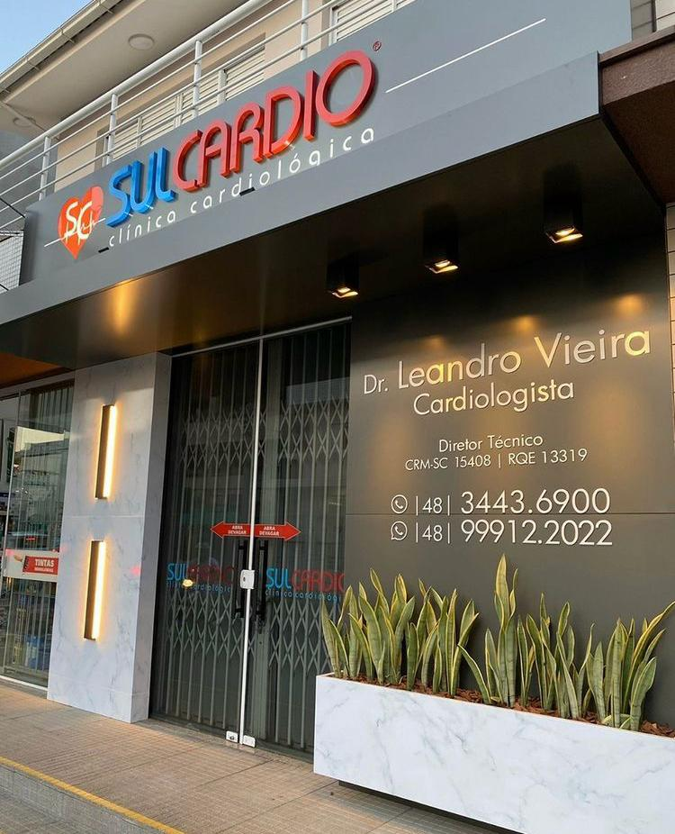

Seu coração, nossa missão.
Nossa equipe de cardiologistas experientes está aqui para cuidar de você. Oferecemos avaliação clínica completa, exames avançados e acompanhamento personalizado. Porque sua saúde cardiovascular merece um atendimento de excelência e humanizado.
Convênios
Exames realizados na clínica
Eletrocardiograma
Registro da atividade elétrica do coração para identificar arritmias, sobrecargas, isquemia ou infarto, além de outras alterações cardiovasculares.
Ecocardiograma
Exame de ultrassom do coração que fornece imagens detalhadas da estrutura e do funcionamento do órgão.
EcoDoppler de Carótidas
Avaliação das artérias do pescoço para diagnosticar placas de gordura e risco de doenças vasculares.
Holter de 24h
Monitoramento contínuo do ritmo cardíaco por 24 horas para detectar arritmias ocultas no dia a dia.
Monitorização ambulatorial da pressão arterial (MAPA)
Acompanhamento da pressão arterial durante 24 horas para um diagnóstico preciso de hipertensão.
Teste ergométrico
Avaliação do funcionamento cardiovascular durante o esforço físico em esteira.
Nossa equipe
Profissionais especializados e comprometidos com sua saúde cardiovascular.
Dr. Mathias Silvestre de Brida
Cardiologista e Ecocardiografista
CRM-SC 24672 | RQE 22128 | 25368
Saiba mais
Sobre a SulCardio
Desde 2010, a Clínica SulCardio tem como missão oferecer um atendimento técnico, ético e humanizado para o cuidado com o coração dos seus pacientes. Com estrutura completa e equipamentos de última geração, a clínica proporciona diagnósticos precisos e tratamentos adequados para cada caso. Sob a coordenação do Dr. Leandro Vieira, cardiologista com mais de 15 anos de experiência, a SulCardio se consolidou como referência em saúde cardiovascular na região de Içara-SC.
Saiba maisConvênios atendidos
Médico Responsável
Dr. Leandro Vieira de Souza
Médico Cardiologista
CRM-SC 15408 · RQE 13319
O Dr. Leandro acredita que, para além de exames e diagnósticos, a Medicina é construída sobre confiança e empatia. Com uma trajetória de mais de 20 anos, ele dedica sua carreira ao cuidado cardiovascular, unindo excelência técnica e um atendimento profundamente humanizado.
Onde estamos
Endereço
R. Vitória, 190 - Sala 01, Centro, Içara - SC, 88820-013 Brasil
Horário de Atendimento
Segunda a Sexta
08:00 - 12:00h
13:00 - 18:00h
Perguntas frequentes
Tire suas dúvidas antes de agendar sua consulta.
Sim, atendemos consultas particulares e alguns convênios. Entre em contato pelo WhatsApp para verificar a cobertura do seu plano específico.
Realizamos Ecocardiograma, Eletrocardiograma (ECG), EcoDoppler de Carótidas, MAPA 24h, Holter 24h e Teste Ergométrico. Todos no mesmo local.
Sim! Dependendo da disponibilidade de agenda e do preparo exigido para o exame, você consegue resolver tudo na mesma visita.
Sua saúde não pode esperar.
Agende sua consulta na SulCardio e receba uma avaliação cardiológica completa com diagnóstico preciso e orientações personalizadas.
+10 mil pacientes atendidos • +15 anos de experiência • +50 mil exames realizados
Agendar Agora pelo WhatsApp